Animating various character drawings is an engaging visual content creation task. Given a single character drawing, existing animation methods are limited to flat 2D motions and thus lack 3D effects. An alternative solution is to reconstruct a 3D model from a character drawing as a proxy and then retarget 3D motion data onto it. However, the existing image-to-3D methods could not work well for amateur character drawings in terms of appearance and geometry. We observe the contour lines, commonly existing in character drawings, would introduce significant ambiguity in texture synthesis due to their view-dependence. Additionally, thin regions represented by single-line contours are difficult to reconstruct (e.g., slim limbs of a stick figure) due to their delicate structures. To address these issues, we propose a novel system, DrawingSpinUp, to produce plausible 3D animations and breathe life into character drawings, allowing them to freely spin up, leap, and even perform a hip-hop dance. For appearance improvement, we adopt a removal-then-restoration strategy to first remove the view-dependent contour lines and then render them back after retargeting the reconstructed character. For geometry refinement, we develop a skeleton-based thinning deformation algorithm to refine the slim structures represented by the single-line contours. The experimental evaluations show that our method outperforms the existing 2D and 3D animation methods and generates high-quality 3D animations from single character drawings.

 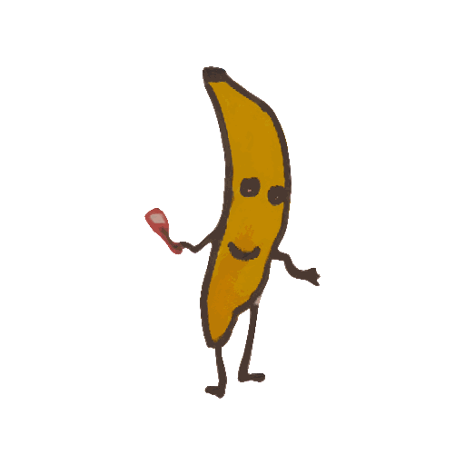
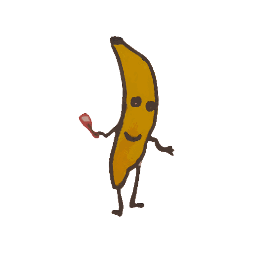
 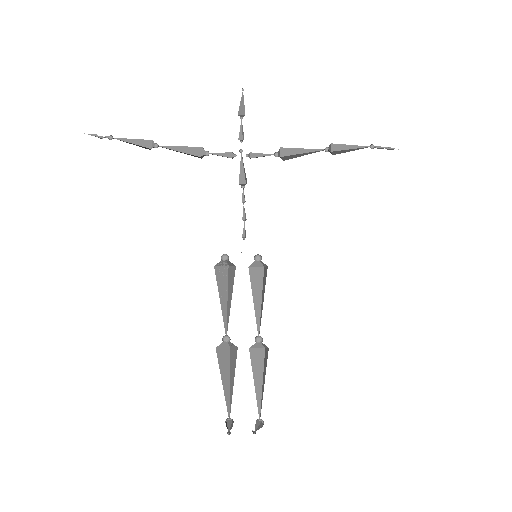
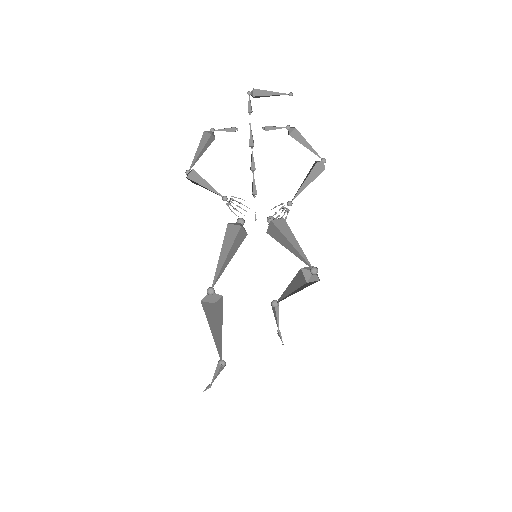
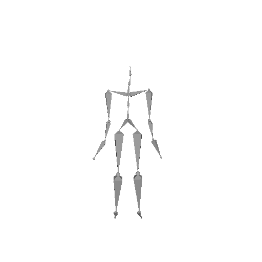
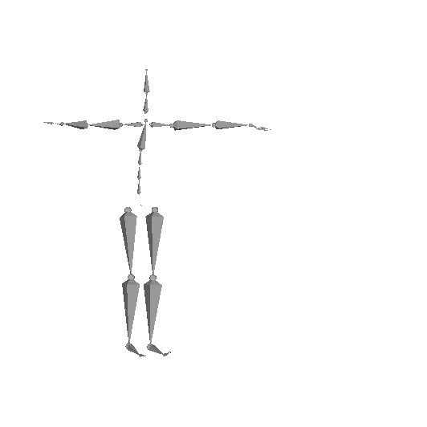
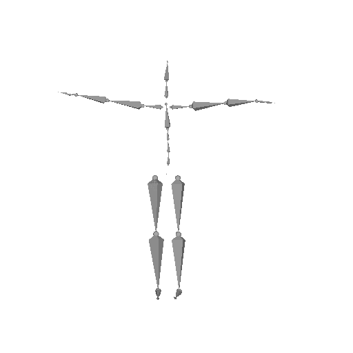
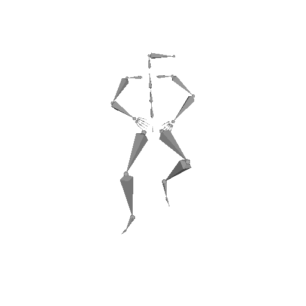
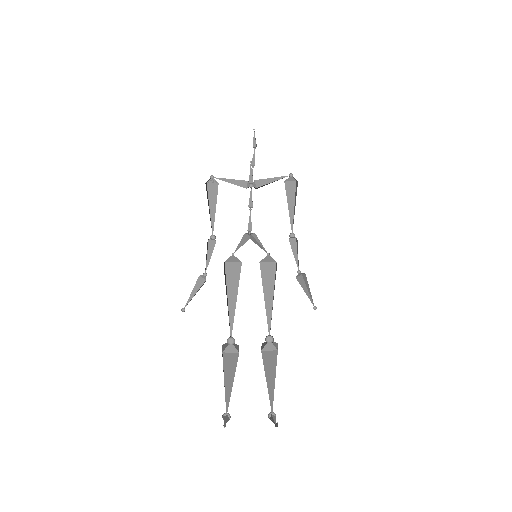
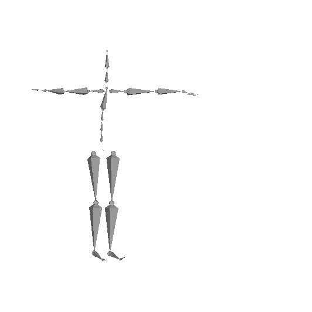

 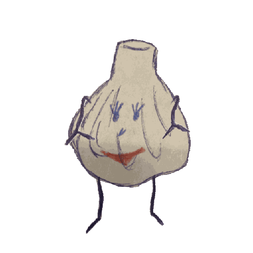
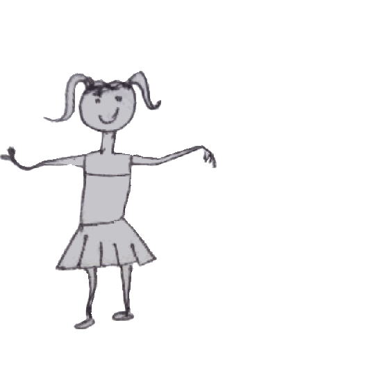
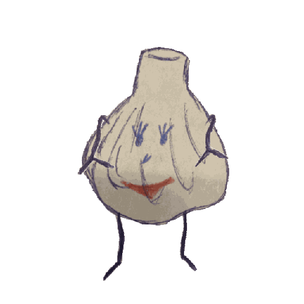
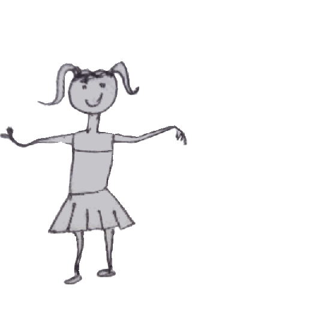

 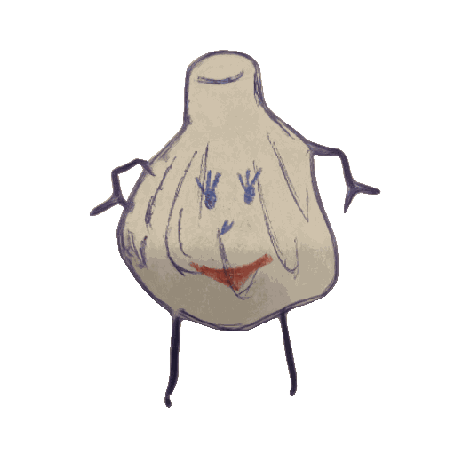
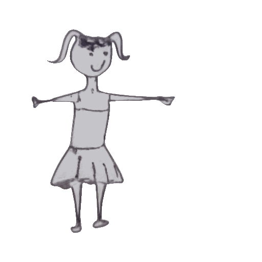
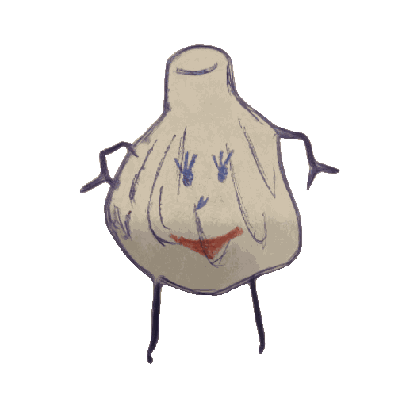
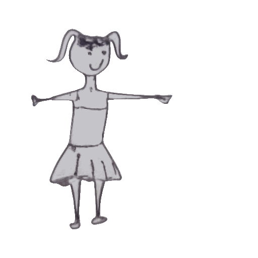
 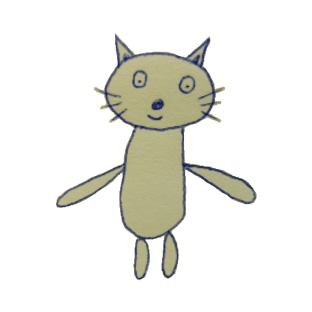
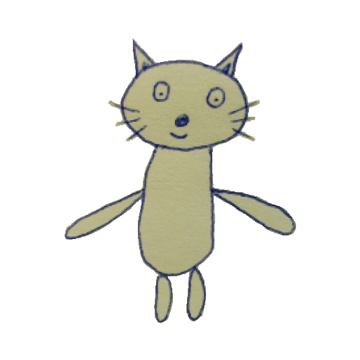

@article{drawingspinup,
title={DrawingSpinUp: 3D Animation from Single Character Drawings},
author={Zhou, Jie and Xiao, Chufeng and Lam, Miu-Ling and Fu, Hongbo},
year={2024},
eprint={xxxx.xxxx},
archivePrefix={arXiv},
primaryClass={cs.CV}
}